LLM@home - privacy-first local inference in practice
Evgenii Novikov, AI hobbyist
About Me
background and interests
- 7 years in Big Tech
- 21 git repositories with pet projects
- AI enthusiast since 2023, experience on the board of directors of an AI startup
Why We Need LLMs
and what they're good for
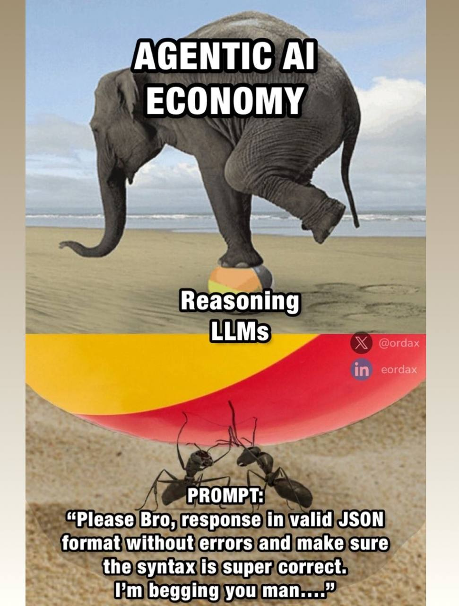
- Can code at junior developer level
- Work better than FAQ in support
- Incredibly efficient compressed archive of all knowledge and the internet
- Write presentations for you
- ¯\_(ツ)_/¯
LLMs in the Cloud
pros and cons
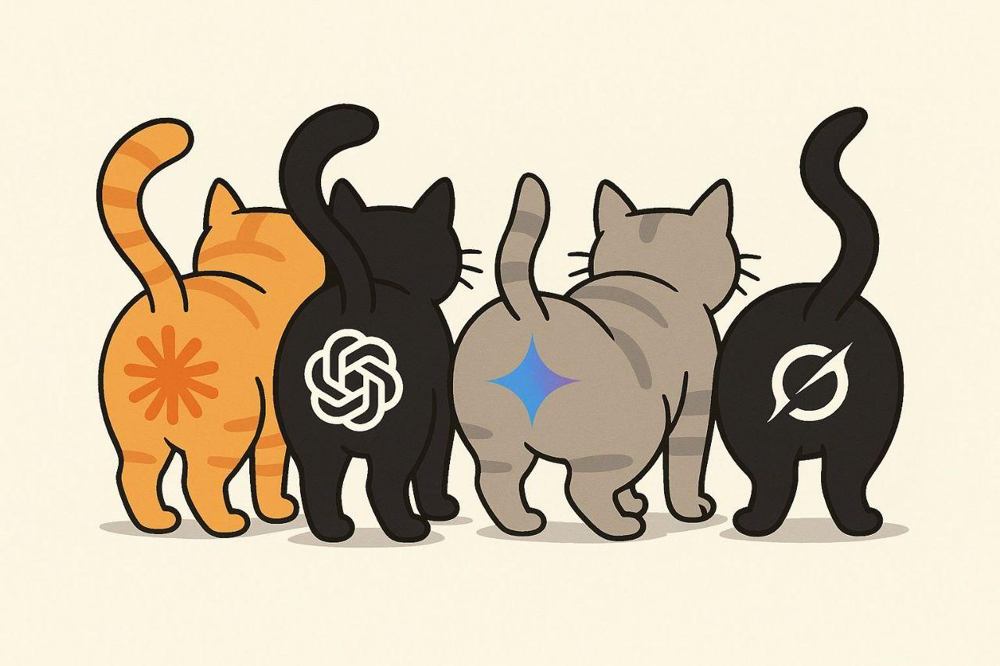
The Cloud Is Just Someone Else's Computer
Pros:
- Easy to scale
- No infrastructure maintenance needed
Cons:
- Your data is no longer entirely yours
Loss and Model Size
why larger models are easier to train
https://arxiv.org/pdf/2203.15556
https://arxiv.org/pdf/2001.08361
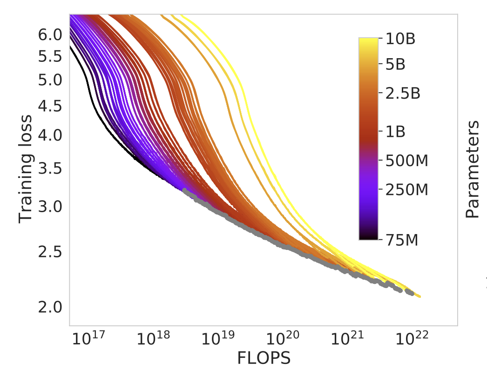
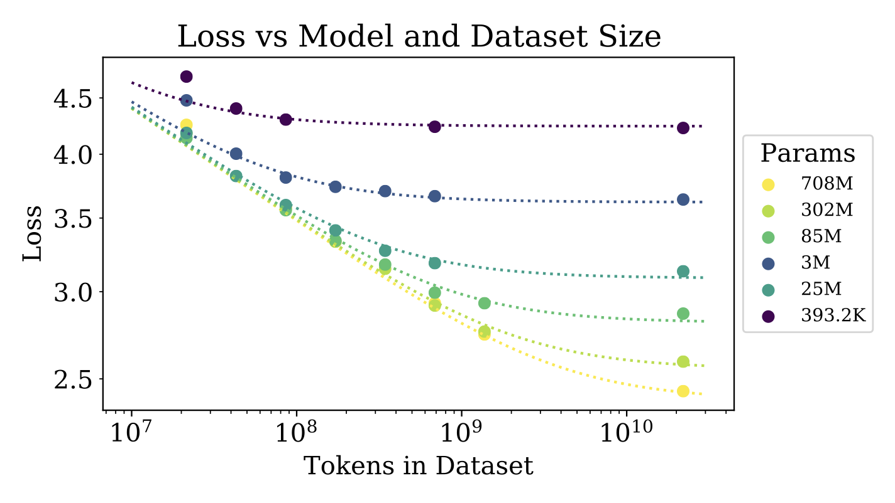
LMArena
finding the best local models
https://lmarena.ai/leaderboard/text
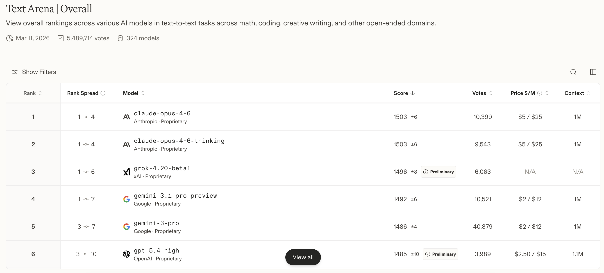
Types of Hardware
compute units
CPU (AMD, Intel, RISC-V)
Pros:
- Cheap
- All RAM available
- Open architectures available (RISC-V)
Cons:
- Slow
- Takes resources away from other tasks
GPU (Nvidia, AMD, Intel)
Pros:
- Fast
- Straightforward
- Lots of software available
- Good parallelism
- Open architectures available (AMD)
Cons:
- Expensive
- Limited vRAM
NPU
Pros:
- Most efficient hardware
Cons:
- Small range available for purchase
- Limited software
- Usually low power
Types of Hardware
memory
RAM
Pros:
- Can install up to 4TB on a server
Cons:
- Slow (DDR4-DDR5)
Unified Memory
Pros:
- Cheap way to give GPU lots of memory
Cons:
- Slow
vRAM
Pros:
- Very fast (DDR6-DDR7)
Cons:
- Expensive
- Limited (32GB / 80GB) per chip
Tradeoffs
fast cheap quality - pick any 2
https://github.com/enovikov11/llm-hardware
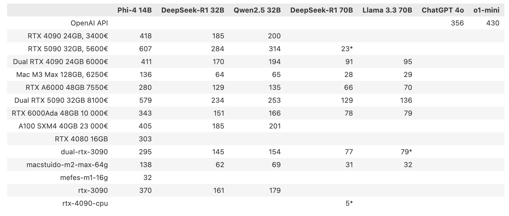
My Experience
hardware
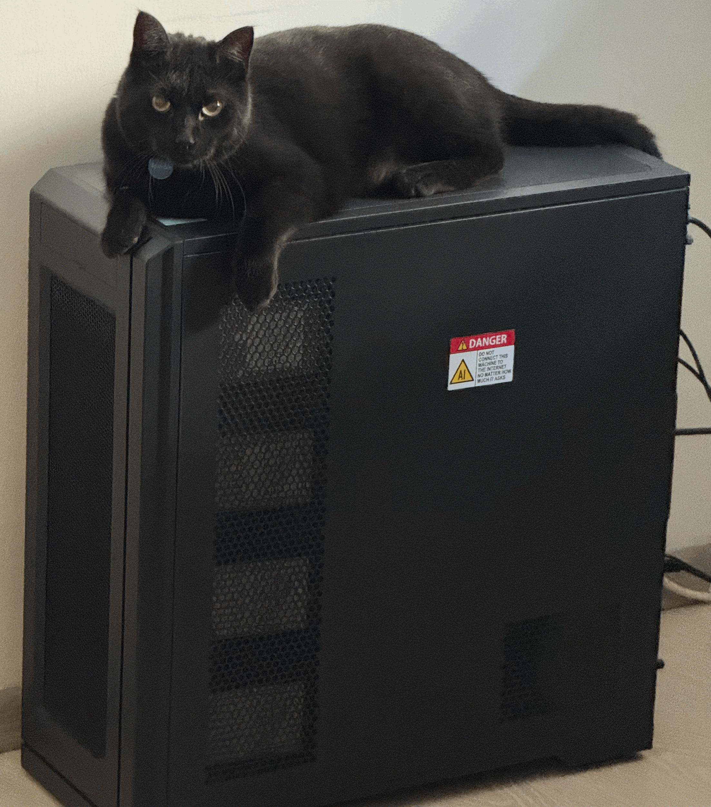
- 512GB DDR4 RAM
- 64-core AMD EPYC 7702p
- 8TB pci 4.0 x16 NVMe SSD
- 72TB datacenter grade HDD
My Experience
firmware
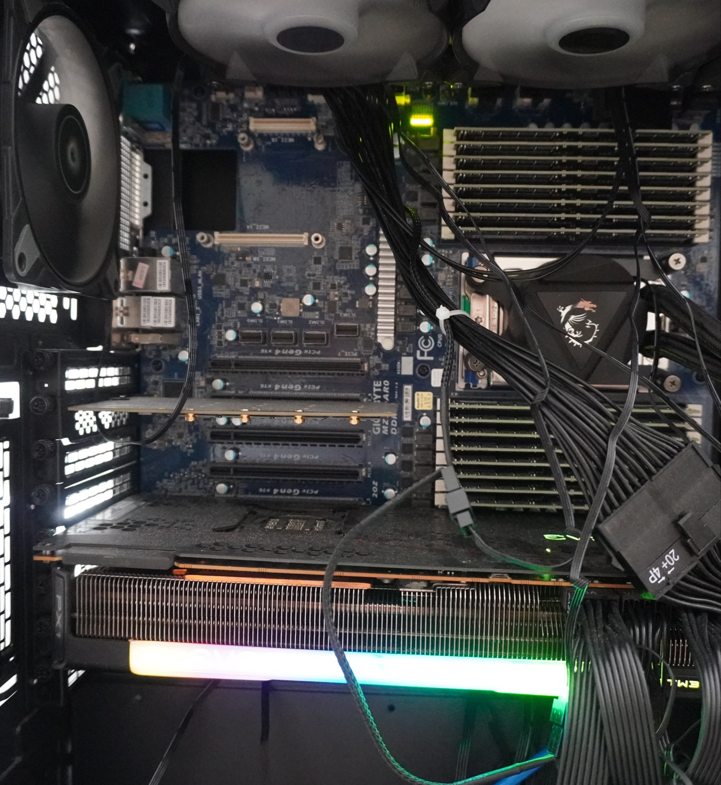
- BIOS and BMC chips - read firmware with SPI programmer -> compare with stock version
- BMC historically very poorly written -> OpenBMC if available
- Ethernet over USB, since BMC also hangs on regular ethernet
My Experience
operating system
Alpine Linux
Pros:
- Small attack surface due to minimal service set
- Musl instead of libc (security-hardened)
Cons:
- One step left one step right and it doesn't work
- Building software from source - common practice
- No Nvidia driver
Debian-based Linux
Pros:
- Everything works out of the box
Cons:
- Larger attack surface due to more unnecessary or unclear services
OpenBSD
Pros:
- Very small kernel (7M LoC vs 40M LoC for linux)
- Security-focused
Cons:
- Lacks optimizations
- No Nvidia drivers
- No NUMA
My Experience
inference software
llama.cpp
When to use:
CPU inference
Pros:
- 0 dependencies
- No issues using quantized models
Cons:
- Batching on CPU practically non-existent
vLLM
When to use:
GPU inference
Pros:
- Can batch requests
Cons:
- Needs expensive GPUs
Ollama / LM Studio
When to use:
Never done anything before, want quick hello world
Pros:
- Easy to use
Cons:
- Low performance
- Lots of unnecessary stuff
My Experience
models
- GLM-4.7-Flash-Q4_K_M.gguf 116 tps (31B, 18GB) on RTX 3090
- MiniMax-M2.5-Q4_K_M.gguf 15 tps (229B, 138GB) on EPYC 7702p
My Experience
GLM-4.7 Flash demo
My Experience
MiniMax M2.5 demo
Security
hardware
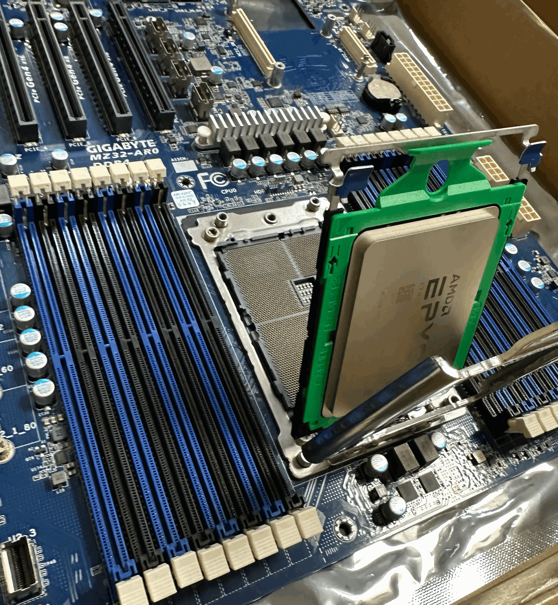
- Server boards have Baseboard Management Controller (BMC)
- It's an ARM chip that controls everything
- Stock firmware is legendarily insecure
- OpenBMC - your choice
Security
network segmentation
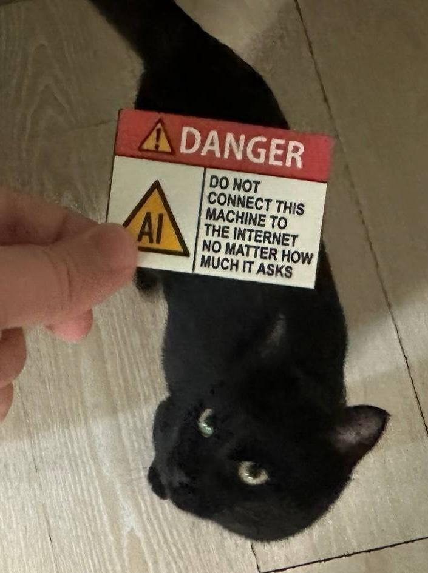
- Protect with firewall
- Use virtual links internally between containers
- For VPN, Wireguard is good - lightweight at around 4k lines in Linux Kernel
Security
virtualization and containerization
- Qemu for machine isolation
- Runc/docker for workloads
- SEV-SNP - encrypted memory from hypervisor in AMD EPYC
Security
recommended checklist
Firmware
- Reset, flash latest release
- Get OpenBMC-compatible board
OS
- Open source (linux-like)
- Small attack surface
Software
- From trusted vendors
Isolation
- Only necessary network traffic allowed
- Workload separated
Performance
kv cache, mmap, latency
KV cache
Pros:
- Speeds up performance
Cons:
- Requires RAM
Memory map
Pros:
- Can avoid using RAM for model weights
Cons:
- Slower if RAM is the bottleneck
- Only suitable for CPU inference
Batch/queues
Batch pros:
- Processes faster on average since multiple at once
Queue pros:
- Predictable latency
- Works better on CPU
Bonus
Open WebUI
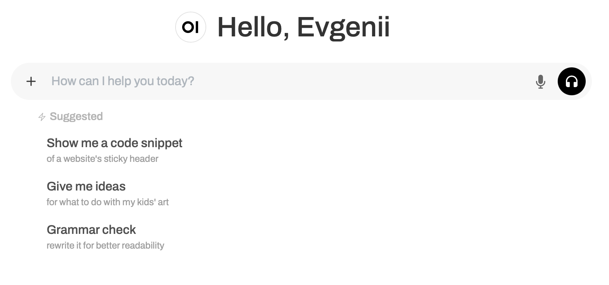
Bonus
retrieval-augmented generation
- Knowledge is very densely packed in the model
- Nuances and fresh context need to be added to the prompt
- RAG solves this problem by loading relevant information
Bonus
LoRA
- This is model adaptation for specific task types
- Doesn't require as many resources
- Limited in impact and experimental
- Available if you run inference yourself in your own code
Links:
Bonus
fine-tuning VS prompting
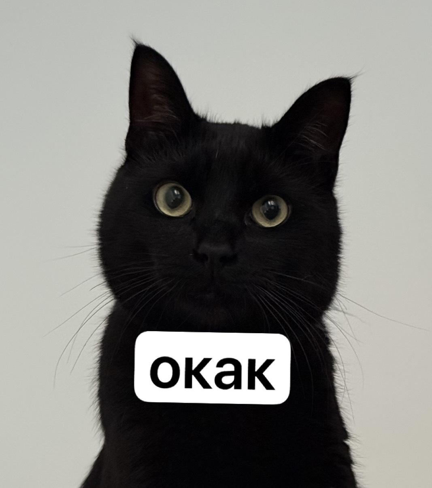
- You probably don't need to train the model
- Prompting solves many problems
- Can try LoRA for LLM
- As a last resort if you really need to allocate many GPUs and fine-tune the model, try to avoid this
Links:
https://github.com/NirDiamant/RAG_Techniques
https://genai.owasp.org/llm-top-10/
Bonus
great playlist on how LLMs work
https://www.youtube.com/playlist?list=PLZHQObOWTQDNU6R1_67000Dx_ZCJB-3pi
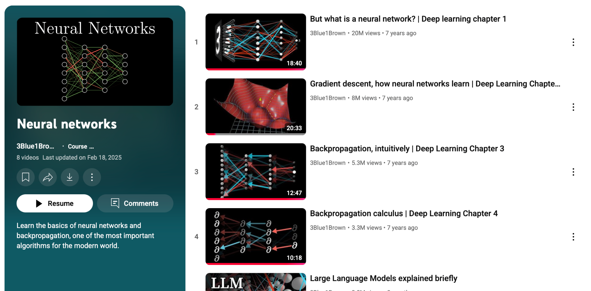
Thank You for Your Attention
@enovikov11